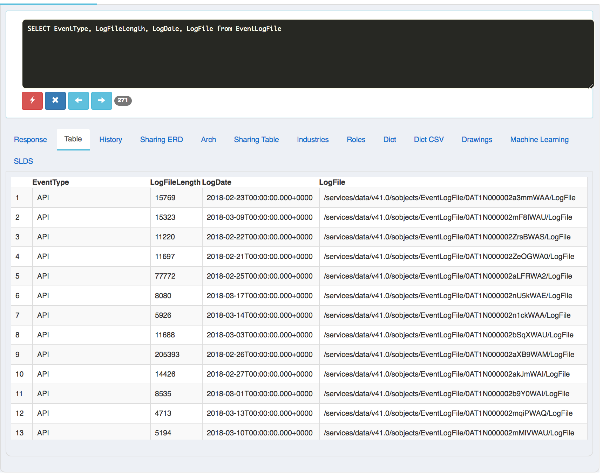
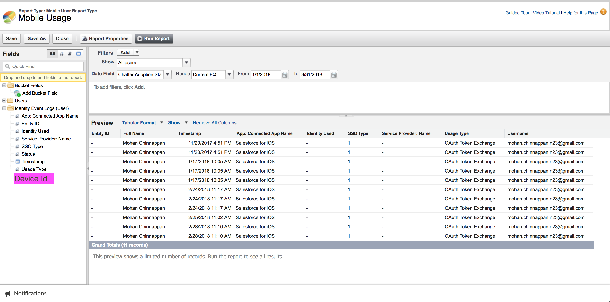

{{appName}}
Goals

- How to prevent valuable company data from being compromised on mobile devices
- Making sure that only authorized users are allowed to access enterprise data
- Meeting enterprise security and industry-compliance policies
- Security and compliance options available with the Salesforce app
- Aligning mobile implementation with enterprise security and industry-compliance policies
- Optimal balance between security and ease of use
Risks and Challenges
- Data loss: Mobile devices are more susceptible to loss or theft
- Personal devices: Bring Your Own Device (BYOD) - security measures you can put in place to protect sensitive information
- Compromised devices and risky apps: If the device is not protected: malware can be installed, which may collect sensitive information: contacts or geo-location data
- Unprotected Networks: Unsecured networks (from Wi-Fi: Hotels, Coffee-shosp, Airports) put users at greater risk because attackers can more easily intercept and hijack valuable data
Options
- Configure Connected App policies in Setup to control:
- Mobile session timeouts
- PIN code enforcement
- IP restrictions
- Implement the Salesforce app with MDM:
For customers security and compliance requirements that can’t be met using the Salesforce app alone
- Using MDM (Mobile Device Management) solution to add additional laryers of security and compliance safeguards
Features
Salesforce App Options
- Downloadable Apps: The Salesforce downloadable apps are available for Android and iOS devices from Google Play or the App Store that meet platform requirements.
- Mobile Browser App: The Salesforce mobile browser app runs in a mobile browser on Android, iOS, and Windows devices that meet platform requirements. This option doesn’t require installing anything from Apple App Store or Google Play
Runs in a sandboxed environment and connects as Connected App
- Sandboxing: Mobile OS restricts and isolates apps so they can’t share data with each other
- Mobile apps also have to explicitly ask for permission to get access to device features, like the calendar, camera, or microphone. When the Salesforce app is installed on a device
- Mobile OS prompts the user to grant a handful of permissions
- Connection to Salesforce : Salesforce Mobile app establishes a connection to Salesforce using Connected App - Since it exists outside of the full Salesforce site
Connected App
- An external application that integrates with Salesforce through APIs
- Uses OAuth to verify both the Salesforce user and the external application:
- Obtains secure access to Salesforce services
- Asks user to authorize data sharing
- Salesforce app collects the user’s credentials and send them to Salesforce server
- Salesforce server returns a access-token (and a refresh-token) to the Mobile App to create a mobile-session
- So user passwords are not stored on the mobile device
- If the mobile-session is expired, Salesforce app attempts to use the refresh-token to obtain a new access-token so the user doesn’t have to reauthenticate
- Salesforce org Admin can control: how long the refresh-token for the Salesforce app is valid.
Admin can evoke a refresh-token when:
- First time a user uses the app
- Every time a user uses the app
- On a set schedule (hourly, daily, or monthly
Oauth

Conected App Example - apps
Conected App Example - iOS App
Conected App Example - iOS app policies

Conected App Example - Notes
- If we put IP Relaxation as Enforce IP Restrictions: This will make
the users to login to Salesforce from designated IP addresses—typically your corporate network or VPN.
But mobile users often aren’t on your corporate network, which means they need to connect to VPN from their device every time they access the Salesforce app.
That can be a barrier to mobile adoption, so some organizations relax IP restrictions for mobile users.
For example, you can specify that mobile users aren’t required to be on VPN as long as they provide a second factor of identification—for example, a verification code from a mobile authenticator app.
You must balance your company’s security requirements with the need to provide a good mobile user experience.
Conected App Example - oAuth Usage
Refresh Token Policy
- Specifies: How long the user’s token for the Salesforce app is valid?
- Immediately expire refresh token: The token is invalid immediately. The user can access the current session, but can’t obtain a new session without reentering credentials.
- Expire refresh token if not used for: The token expires if it isn’t used in the specified amount of time.
-
Expire refresh token after:expires the token after a fixed amount of time.
For example, if the policy states 30 days, the token expires in a month even if the user is active in the Salesforce app on a daily basis.
Mobile Session Timout
- Timeout Value controls how long a mobile session lasts.
Default: timeout value in the user’s profile or org’s Session Settings -
if session_timeout = 2 hrs and refresh_token_expiry = 30 days: Salesforce_App uses refresh_token to renew Session_ID # during this time period, user can stop and restart w/o logging back-in # When refresh-token is expired, user must log back in - Two-factor authentication (2FA) enhances your org’s security by requiring a second level of authentication for every user login. When mobile users log in to the Salesforce app for the first time, they are prompted to set up an identity verification method if you haven’t already configured one for them.
PIN code enforcement
-
Extra layer of data protection by forcing mobile users to set up an app-specific
PIN code for the Salesforce app - so it locks after a period of inactivity
Reqiure Pin after: 30 minutes : (1, 5, 10, 30,60, 120, 180, 240 minutes)
Pin length: 5 : (4 to 8)
This policy only requires that the user enter a PIN to continue using the current session
Reset forgotten passcode (PIN) in Salesforce for Android and iOS
-
If you can't remember your passcode (PIN) for Salesforce mobile app, you'll need to revoke your Salesforce for Android and iOS access.
You'll then receive a new passcode the next time you attempt to log in to the Salesforce mobile app.
- From a web browser, log in to Salesforce.
- Click your name | select Settings.
- Under "My Personal Information," click Connections.
- Next to any Salesforce for Android and iOS login entries, click Revoke. (Note: If there are multiple entries, revoke them all)
- Once you have revoked your access, attempt to log in to Salesforce for android and iOS again and you will be provided with a new passcode.
How to revoke the Mobile App in the user settings
Mobile Compliance Policies
- Disable the ability to copy and paste from Salesforce to other mobile apps (DISABLE_EXTERNAL_PASTE)
- Prevent the ability to print from the Salesforce app
- Require the use of a specific mobile email client for Salesforce (FORCE_EMAIL_CLIENT_TO)
- Disable file sharing from Salesforce to other mobile apps (SHOW_OPEN_IN )
- Remove call logging from the navigation menu (CALL_HISTORY)
Additional Security Settings
- Enable or disable the Salesforce mobile browser app
- Enable for offline access (version 10 and above)
- When you enable offline access for the Salesforce app, data is cached securely on the device
- Users can keep working in the app even if they lose their connection to a Wi-Fi or cellular network
- Offline access isn’t available in the mobile browser app
- Control : users can import contacts into the Salesforce app
Additional Security Settings - 2
- Enable or disable the Salesforce mobile browser app
- Mobile browser app flavor for Salesforce App is for the users who decide not to install the downloadable app from App Store or Google Play
- You can control whether users can access the Salesforce mobile browser app when they log in to Salesforce from a supported mobile browser (default: ON)
Monitor and Manage
- User Count: Shows number of users who have run the app
- With Salesforce Shield, you can see even more details about the activity of the mobile users in your organization. You can view granular information about individual events or track trends to swiftly identify abnormal behavior and safeguard your company’s data.
- Revoke: You can revoke a particular user by clicking Revoke link
- Block the App: When we block the app and then reenable it, this will force all mobile users to reenter their credentials.
Adoption Dashboard and Reports By Salesforce Labs
-
This package contains a dashboard and several reports to help you determine your adoption metrics for your Salesforce App users.
Salesforce1 Adoption Dashboard and Reports -
Quip Doc on this:
Monitor Adoption of Salesforce1 app - Trailhead: Event Monitoring
- Help: Event Monitoring: Monitor Login Activity with Login Forensics
- Event Log File Browser App: A Salesforce connected web app to access and download event log files
- Trailhead: Event Monitoring Analytics App
- Einstein Analytics-enabled Developer Edition
Monitor Adoption of Salesforce1 app
Querying EventLogFile - 1
Querying EventLogFile - 2

Querying EventLogFile - ELF Browser app
Salesforce App with SSO (Single Sign-On)
- A user tries to access a service
- The service provider (SP) sends out a request to the identity provider (IdP) basically asking, “Hey, is it okay if this user accesses my service?”
- The identity provider makes sure that users are who they say they are by checking its (IdP) database and then returning a response saying, “Yes, this user is authorized
SSO Links
- Salesforce for iOS and Android SSO (Single Sign-On) overview Sample IdPs:
- Microsoft’s Active Directory Federation Services (ADFS)
- Ping Identity’s PingFederate
- open-source Shibboleth
- ForgeRock’s OpenAM
MDM - Mobile Device Management
- Enforce your company’s security policies on users’ mobile devices across mobile operating systems
- Maintain and administer all the enterprise mobile apps your employees use
- Before rolling out the Salesforce mobile app:
Have a device management (MDM) strategy in place so your company’s data is safe when users access it from phones and tablets - Mobile Device Policy
- Company-issued
- BYOD - Bring Your Own Device
- Device Management Strategy
- Use Connected App policies to secure Salesforce App and manage access
- Implement Salesforce App with MDM solution
Large companies and businesses with strict security and compliance requirements sometimes have needs that can’t be met using the connected app policies. They use MDM to help them enforce those requirements.
MDM Solutions
- MDM is security software that lets companies monitor, manage, and secure mobile devices that are deployed across multiple mobile operating systems and service providers.
- Provides end-to-end security:
Mobile apps, network, data, and the device itself are managed with a single software product - MDM solution features
- Push apps to users’ devices. You can even configure settings for the apps before deploying them. For example, you can push custom login settings to the Salesforce app.
- Require VPN for specific apps.
- Control granular security and compliance settings. For example, you can require a passcode at the OS level, disable screen capture, or prevent users from taking photos.
- Use x.509 certificates to either speed up user authentication or as a second factor in the login process.
- Control content sharing permissions.
MDM Solutions - iOS and Android
- iOS
- MDM solutions work with the native management framework built into the operating system. This capability has been available since iOS 7
- Android
- Android’s device management functionality is available with Android for Work, which is a program that supports enterprise use of Android devices. Android for Work has been available since Android 6.
- If your company already uses an MDM solution, find out from the administrator to know about the configuration and deployment of the Salesforce app.
Deploy the Salesforce App with MDM - Install, Configure, Push
- In your MDM software, install the Salesforce mobile App
- Configure the security and compliance settings for the Salesforce App.
For example, in some MDM software you can require a VPN connection for Salesforce access. - Optionally, configure features specific to the Salesforce app, such as the ability to set up custom login hosts
- Push the Salesforce app to your users
Deploy Salesforce App with MDM software - AirWatch and MobileIron Demo
Video:Single Sign-On and Access Management for Mobile Applications
Video: Reporting Mobile App Usage
Report creation: Mobile App Usage - 1
Report creation: Mobile App Usage - 2
Report creation: Mobile App Usage - 3
Report creation: Mobile App Usage - 4
Report creation: Mobile App Usage - 5
